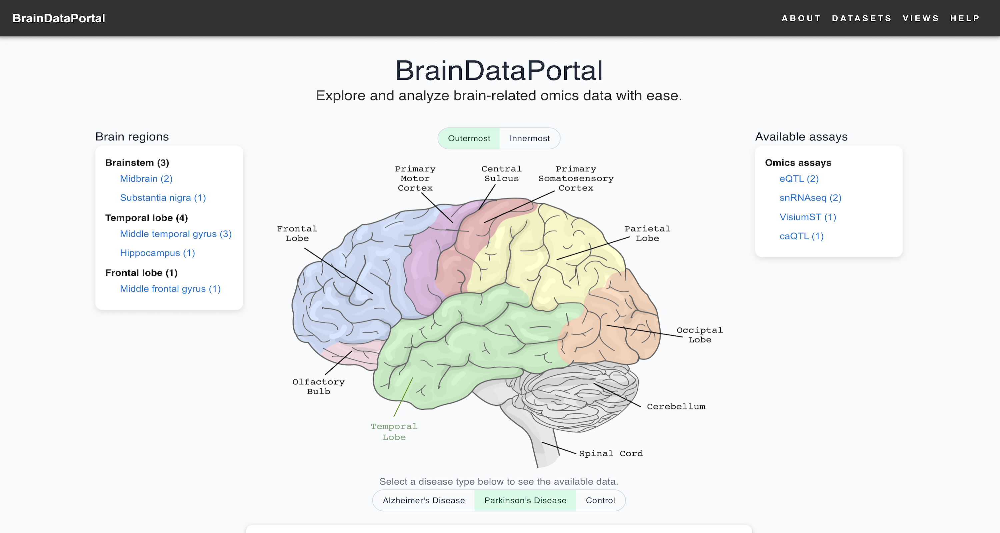
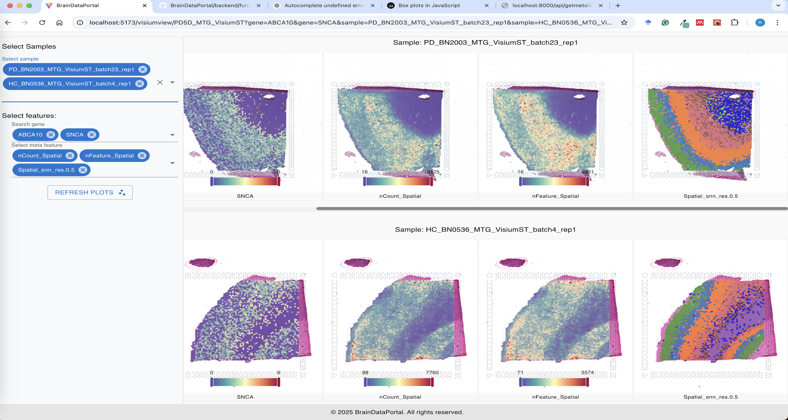

Install the BrainDataPortal¶
This document will guide you through the process of installing the BrainDataPortal. Follow the steps to set up your development environment and get BrainDataPortal running locally or in the cloud.
1. Prerequisites¶
Before you begin, ensure you have the following installed on your system:
- Python 3.10 or higher: Required to run the backend.
- Node.js 22 or higher: Required to run the frontend.
- [Optional] Conda: Set up a virtual environment
- [Optional] Git: Clone the repository
2. Get codes¶
- Clone the repository.
Or, download the zipped repository from https://github.com/huruifeng/BrainDataPortal
git clone https://github.com/huruifeng/BrainDataPortal.git - Setup backend environment.
- [Optional] Create a virtual environment.
conda create -n braindataportal python=3.10 conda activate braindataportal - Change to the BrainDataPortal/backend directory.
- Install dependencies.
pip install -r requirements.txt
- [Optional] Create a virtual environment.
3. Run the backend.¶
Important Note
Make sure you are in the ROOT directory of the project (e.g., BrainDataPortal) directory, NOT the backend folder
-
Option 1: Run in the terminal.¶
uvicorn backend.main:app --host 0.0.0.0 --port 8000 --workers 4 --proxy-headers # The above command will start the backend server on port 8000 # The --proxy-headers option is required to enable CORS # The --workers option specifies the number of worker processes # The --host option specifies the host IP address, Default is 127.0.0.1 # 0.0.0.0 means listening on all IP addresses. # Use 127.0.0.1 for listening on localhost. # The --port option specifies the port number, Default is 8000 # This port number is used to access the backend server # It will be used in the frontend code, or in proxy server setup # MAKE SURE THE PORT IS NOT BLOCKED. # Stop the backend server <Ctrl + C> - Press Ctrl+C in the terminal to stop the backend server -
Option 2: Run in the background using nohup.¶
nohup uvicorn backend.main:app --host 0.0.0.0 --port 8000 --workers 4 --proxy-headers >> backend.log 2>&1 & # The '>> backend.log 2>&1 &' redirects the output to a log file # The & runs the command in the background # To stop the backend server, use the following command: kill -9 $(lsof -t -i:8000)
4. Setup frontend¶
-
4.1 Global environment¶
- Set global environment variables in the .env file (frontend/env/.env).
# variables in the .env file (frontend/env/.env) - Global settings, always loaded VITE_APP_TITLE = BrainDataPortal # home page view options, the folder name of the home page VITE_HOME_PAGE = Home_BDP # runnning port, for running locally in development mode # This port number is used to access the frontend server, it is different from the backend port VITE_PORT = 3000
- Set global environment variables in the .env file (frontend/env/.env).
-
4.2 Run the frontend¶
-
Option A: Development mode¶
- Set environment variables in the .env.development file (frontend/env/.env.development).
# .env.development - Development settings # Run the App locally or in the cloud in dev mode VITE_BACKEND_URL = http://<backend-running-ip>:8000 # The <backend-running-ip> is the IP address where the backend server is running # If the backend server is running locally, use 127.0.0.1 or localhost # The 8000 is the port number where the backend server is running on, adjust it if needed - Run the frontend locally or in the cloud in dev mode.
# Navigate to the frontend directory cd BrainDataPortal/frontend # Install dependencies npm install # ============================== # [Option 1] Running the frontend server in terminal: # Start development server npm run dev # The above command will start the frontend server on port 3000 # you can access the frontend at http://<frontend-running-ip>:3000 # Stop the frontend server <Ctrl + C> - Press Ctrl+C in the terminal to stop the frontend server # ============================== # [Option 2] Running the frontend server in the background: nohup npm run dev >> frontend.log 2>&1 & # To stop the frontend serverrunning in the background, use the following command: kill -9 $(lsof -t -i:3000) - Now, you can access the pages at http://frontend-running-ip:3000 or http://localhost:3000
- Set environment variables in the .env.development file (frontend/env/.env.development).
-
Option B: Production mode(Without proxy server)¶
- Set environment variables in the .env.production file (frontend/env/.env.production).
# .env.production - Production settings # Run the App locally or in the cloud in production mode VITE_BACKEND_URL = http://<backend-running-ip>:8000 # The <backend-running-ip> is the IP address where the backend server is running # If the backend server is running locally, use 127.0.0.1 or localhost # The 8000 is the port number where the backend server is running on, adjust it if needed - Build the frontend pages.
# Navigate to the frontend directory cd BrainDataPortal/frontend # Install dependencies npm install # Build the frontend pages npm run build # This command will build the frontend pages in the frontend/dist folder - Deploy the frontend pages (Apache server or Nginx server)
# Navigate to the frontend directory cd BrainDataPortal/frontend # Deploy the frontend pages sudo cp -r dist/* /var/www/html # This command will copy the frontend pages to the Apache server or Nginx server # The /var/www/html is the directory where the frontend pages are deployed # You may need to adjust the path (/var/www/html) depending on your Apache server or Nginx server configuration. # MAKE SURE THE DIRECTORY IS NOT BLOCKED. # You may create a subdirectory(e.g. /var/www/html/BrainDataPortal) in the root directory. # cp -r dist/* /var/www/html/BrainDataPortal. - Now, you can access the pages at http://Apache_Nginx_server_IP
- Set environment variables in the .env.production file (frontend/env/.env.production).
-
Option C: Production mode (Nginx server with proxy service).¶
- Set environment variables in the .env.nginx file (frontend/env/.env.nginx).
# .env.nginx - Production settings # Run the App in the cloud in production mode VITE_BACKEND_URL = '' # The backend URL is an empty string, we will use the proxy service to proxy the requests to the backend - Build the frontend pages.
# Navigate to the frontend directory cd BrainDataPortal/frontend # Install dependencies npm install # Build the frontend pages npm run build:nginx # This command will build the frontend pages in the frontend/dist folder - Setup the proxy service (Nginx server) (Example configuration file bdpvite_nginx):
# Create and edit /etc/nginx/conf.d/BrainDataPortal.conf server { # Make sure THE PORT IS NOT USED! listen 80; server_name localhost; # Replace with the actual path to your frontend production folder, e.g., /var/www/html/BrainDataPortal/dist; root <path-to-your-frontend-production-folder> index index.html; # frontend pages location / { try_files $uri /index.html; } # API requests - proxy to FastAPI location /api/ { proxy_pass http://localhost:8000; # Replace with your FastAPI server address (e.g., http://localhost:8000) proxy_set_header Host $host; proxy_set_header X-Real-IP $remote_addr; proxy_set_header X-Forwarded-For $proxy_add_x_forwarded_for; } # QTL requests - proxy to FastAPI location /qtl/ { proxy_pass http://localhost:8000; proxy_http_version 1.1; proxy_set_header Host $host; proxy_set_header X-Real-IP $remote_addr; proxy_set_header X-Forwarded-For $proxy_add_x_forwarded_for; } location /visium/ { proxy_pass http://localhost:8000; proxy_http_version 1.1; proxy_set_header Host $host; proxy_set_header X-Real-IP $remote_addr; proxy_set_header X-Forwarded-For $proxy_add_x_forwarded_for; } location /signal/ { proxy_pass http://localhost:8000; proxy_http_version 1.1; proxy_set_header Host $host; proxy_set_header X-Real-IP $remote_addr; proxy_set_header X-Forwarded-For $proxy_add_x_forwarded_for; } location /datasetmanage/ { proxy_pass http://localhost:8000; proxy_http_version 1.1; proxy_set_header Host $host; proxy_set_header X-Real-IP $remote_addr; proxy_set_header X-Forwarded-For $proxy_add_x_forwarded_for; } } - Enable the site
# Check Nginx configuration sudo nginx -t # Reload Nginx sudo systemctl reload nginx # Check Nginx status sudo systemctl status nginx - Now, you can access the pages at http://Apache_Nginx_server_IP
- Disable the site
# Remove the configuration file sudo rm /etc/nginx/conf.d/BrainDataPortal.conf # Restart Nginx sudo systemctl restart nginx # Check Nginx status sudo systemctl status nginx
- Set environment variables in the .env.nginx file (frontend/env/.env.nginx).
5. Example pages¶
Home Page¶

Single Cell UMAP clustering¶

Spatial Transcriptomics¶
